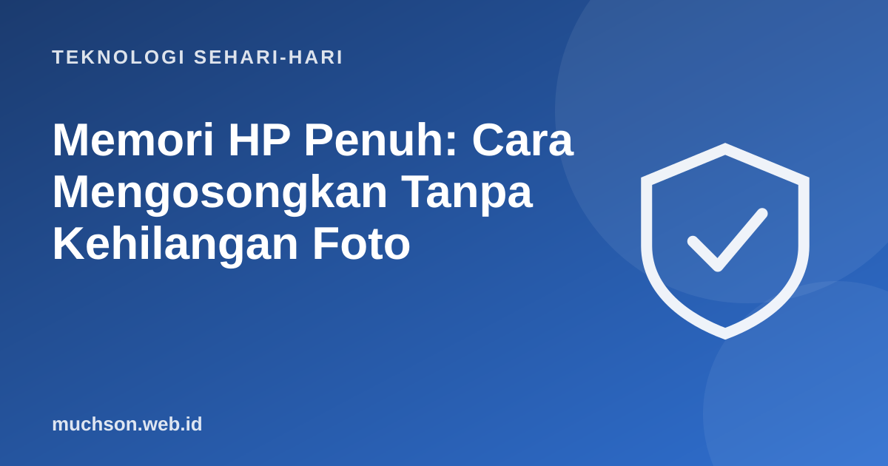

Beranda › Artikel › Teknologi Sehari-hari
Teknologi Sehari-hariMemori HP Penuh: Cara Mengosongkan Tanpa Kehilangan Foto
"Penyimpanan hampir penuh." Notifikasi ini biasanya muncul di saat yang paling tidak tepat, misalnya ketika hendak memotret momen penting. Banyak orang langsung menghapus foto secara acak. Padahal ada cara yang lebih cerdas: cari dulu apa yang paling banyak memakan ruang, lalu bersihkan dari sana.

Cari pemakan ruang terbesar dulu
Menghapus 50 foto mungkin hanya menghemat beberapa ratus MB, sementara satu video 10 menit beresolusi tinggi bisa memakan lebih dari 1 GB. Mulailah dengan melihat rincian penyimpanan di pengaturan HP.
Langkah 1: WhatsApp, si pemakan diam-diam
WhatsApp menyimpan setiap foto, video, stiker, dan dokumen yang masuk ke grup. Grup keluarga dan grup kantor bisa mengumpulkan beberapa GB tanpa disadari.
- Buka WhatsApp → Setelan → Penyimpanan dan data → Kelola penyimpanan.
- Lihat berkas "Lebih dari 5 MB" dan "Sering diteruskan". Hapus yang tidak perlu.
- Pilih grup dengan ukuran terbesar, tinjau, lalu hapus media lama.
- Atur Unduh media otomatis agar video tidak terunduh otomatis lewat data seluler maupun Wi-Fi.
- Pertimbangkan pesan sementara untuk grup yang ramai.
Langkah 2: foto dan video ke cloud dengan aman
Memindahkan foto ke cloud adalah cara efektif, tetapi lakukan dengan urutan yang benar agar tidak kehilangan apa pun:
- Aktifkan backup di Google Photos, iCloud, atau layanan cloud lain.
- Pastikan backup selesai (cek di aplikasi bahwa semua item sudah terunggah).
- Periksa beberapa foto acak di versi web layanan tersebut.
- Baru gunakan fitur "kosongkan ruang" atau "optimalkan penyimpanan" di HP.
Jangan mengandalkan satu tempat saja untuk foto berharga. Aturan 3-2-1 menganjurkan 3 salinan, di 2 media berbeda, dengan 1 di lokasi lain. Contoh: di HP, di cloud, dan di hard disk eksternal.
Langkah 3: aplikasi dan cache
- Hapus aplikasi yang jarang dipakai. Game yang tidak dimainkan lagi biasanya paling besar.
- Hapus cache aplikasi media sosial dan peramban di Android (Setelan → Aplikasi → pilih aplikasi → Penyimpanan → Hapus cache). Cache akan terbentuk lagi, jadi ini solusi sementara.
- Musik dan video unduhan di aplikasi streaming sering terlupa. Hapus yang sudah tidak didengar atau ditonton.
- Folder Unduhan berisi PDF, APK, dan berkas lama yang tidak lagi dibutuhkan.
Berapa kapasitas yang sebenarnya Anda butuhkan?
Kebiasaan agar memori tidak cepat penuh
- Matikan unduh otomatis media di aplikasi pesan.
- Rekam video dengan resolusi HD, bukan 4K, kecuali benar-benar perlu.
- Jadwalkan bersih-bersih sebulan sekali, misalnya setiap tanggal 1.
- Aktifkan backup otomatis foto saat terhubung Wi-Fi.
Tanya jawab
Kenapa memori HP cepat penuh padahal jarang foto?
Apakah menghapus cache aman?
Bagaimana memindahkan foto ke cloud tanpa hilang?
Berapa kapasitas HP yang cukup?
Sumber dan bacaan lanjut
- Google: Kosongkan ruang penyimpanan di perangkat Android
- Apple: Cara memeriksa penyimpanan di iPhone dan iPad
- WhatsApp Help Center
- Cara backup foto dan data: aturan 3-2-1 (artikel terkait)